공공디자인으로 랩(Lab)하기 II — Public Design Day
공공디자인으로 ‘랩(Lab)’하기 II.
Public Design Day
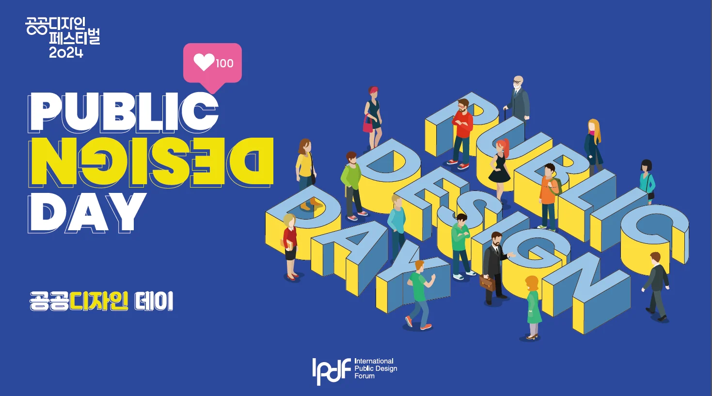
“ .... Public Design Day를 통해 실행 중심의 접근, 다자간 협력 모델 구축, 데이터 기반의 개선 가능성 모색, 시민 참여 유도 등의 강점을 공유하며 공공디자인의 사회적 역할과 실천적 가치를 확산하는 데 기여하였다....”
공공디자인 데이(Public Design Day)란.
공공디자인데이 Public Design Day는 공공가치의 향상을 목표로 다양한 사회 문제를 해결하기 위한 방안을 직접 실행하는 혁신적인 접근 방식의 공공디자인 실행방안이며'사람을 위한 공공공간 디자인' 및 '공공가치 확산을 위한 참여 프로젝트'를 주제로, 실제 공공공간의 공공문제를 해결하기 위해 '택티컬 어바니즘(Tactical Urbanism)' 방법론을 적용한 실험적 공공디자인 운동(Public Design Activism)이다.
본 행사는 국제공공디자인포럼 IPDF(International Public Design Forum)의 지원과 주관하에 5개의 청년 공공디자인 단체(홍익대 공공디자인연구센터, 퍼디즈, 비들x젤리장, 공심이, 체인지워크)가 참여하였다.
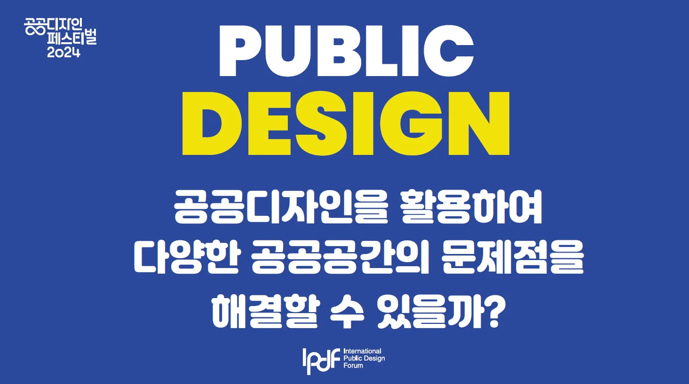
“ 기존의 선언적 접근에서 벗어나 구체적인 문제 해결을 위한 실천적 공공디자인을 지향” 2024 Public Design Day는 공공디자인 페스티벌의 주요 프로그램 중 하나로 진행되었으며, 공공가치 향상을 목표로 실제 공공공간에서 발생하는 사회 문제를 시민, 전문가, 학계 등 다양한 주체가 함께 참여하여 디자인적 해법을 모색하고 직접 실행하는 실험적 프로젝트로 진행되었다.
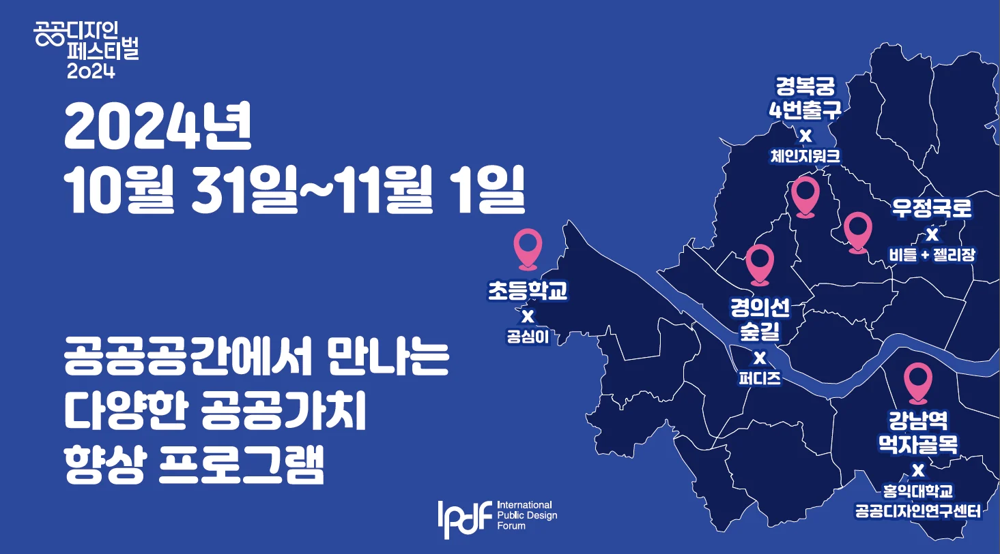
공공디자인 데이(Public Design Day)의 특징
공공디자인의 장점을 최대한 활용하여 신속하고, 유연하며, 참여적이고, 임시적 저비용의 실험적 개입을 통해 공공공간의 문제점을 개선하고, 사회적 공유와 참여적 활력을 불어넣는 디자인 방법론을 활용한다.
○ 신속한 실험
장기적이고 막대한 예산이 소요되는 기존 도시계획의 한계를 넘어, 단기간 내에 아이디어를 실제 공간에 적용하고 그 효과를 즉각적으로 테스트.
○공공 인식 변화
물리적 환경의 임시적 변화를 통해 시민들이 기존의 문제점을 새롭게 인식하고, 개선의 필요성에 공감하며, 나아가 행동 변화를 유도.
○공공 참여 확대
저비용으로 실행하며 전문가뿐만 아니라 지역 주민, 학생 그룹 등 다양한 주체가 프로젝트의 기획 및 실행에 참여.
○데이터 기반 실증
임시적 개입 전후의 사용자 행태 변화, 만족도 등을 관찰하고 기록하여, 향후 영구적인 개선안을 마련하거나 정책을 수립하는 데 실증적인 근거 자료를 마련
○협력 거버넌스 디자인
공공 문제 해결을 위해 지자체, 학계, 민간, 시민사회가 협력하는 거버넌스 구축을 용이하게 하여 공공가치적 영향력 기반을 마련.
공공디자인 데이(Public Design Day) 실험 모델.
1. 바르고 깨끗한 흡연구역 만들기
“행동 유도를 통한 쾌적한 환경 조성”
홍익대 공공디자인연구센터는 서울 시내 공공 흡연부스가 턱없이 부족한 현실 속에서, 흡연자들이 골목길 등에서 흡연 후 꽁초를 무단 투기하는 습관이 고착화된 점에 주목하고 무분별한 담배꽁초 투기로 인한 도시 미관 저해 및 간접흡연 문제 해결을 위해 '바르고 깨끗한 흡연구역 만들기' 프로젝트를 진행했다.
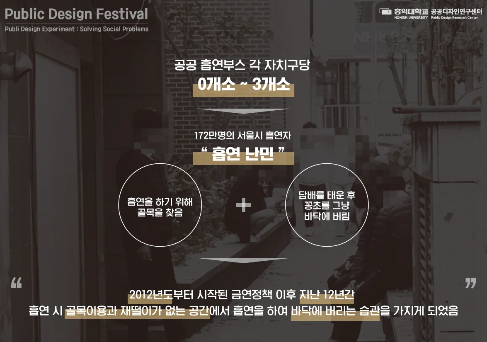
‘바르고 깨끗한 흡연구역 만들기 실험’은 단순히 재떨이를 설치하는 것을 넘어, 흡연자들이 자발적으로 꽁초를 지정된 곳에 버리도록 유도하는 '넛지(Nudge) 디자인'을 적용한 실험을 진행했다. 흥미로운 질문이나 게임 형식(예: 밸런스 게임)을 활용한 재떨이를 강남역 인근 등 유동 인구가 많은 곳에 설치하여 시민들의 참여를 유도했다.
“ 지저분한 환경을 만드는 사람들의 행동 개선”
-담배꽁초를 잘 버릴 수 있도록 흥미를 유도하는 시설 설치
-시인성을 향상시키는 방안 마련
-담배꽁초를 버릴 수 있는 임시 재떨이 제공
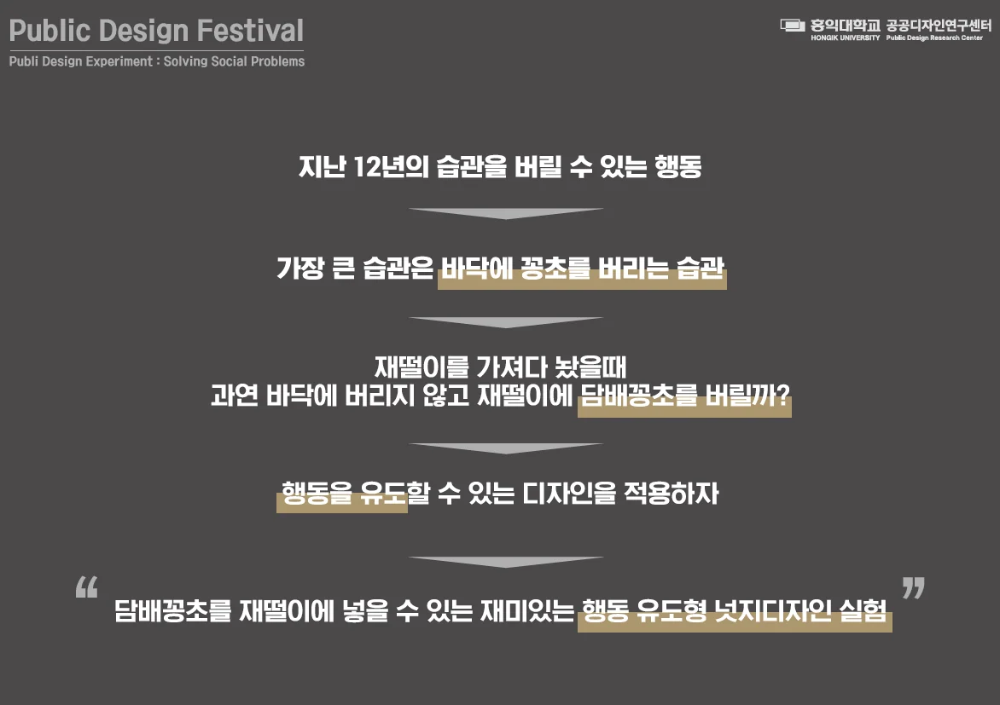
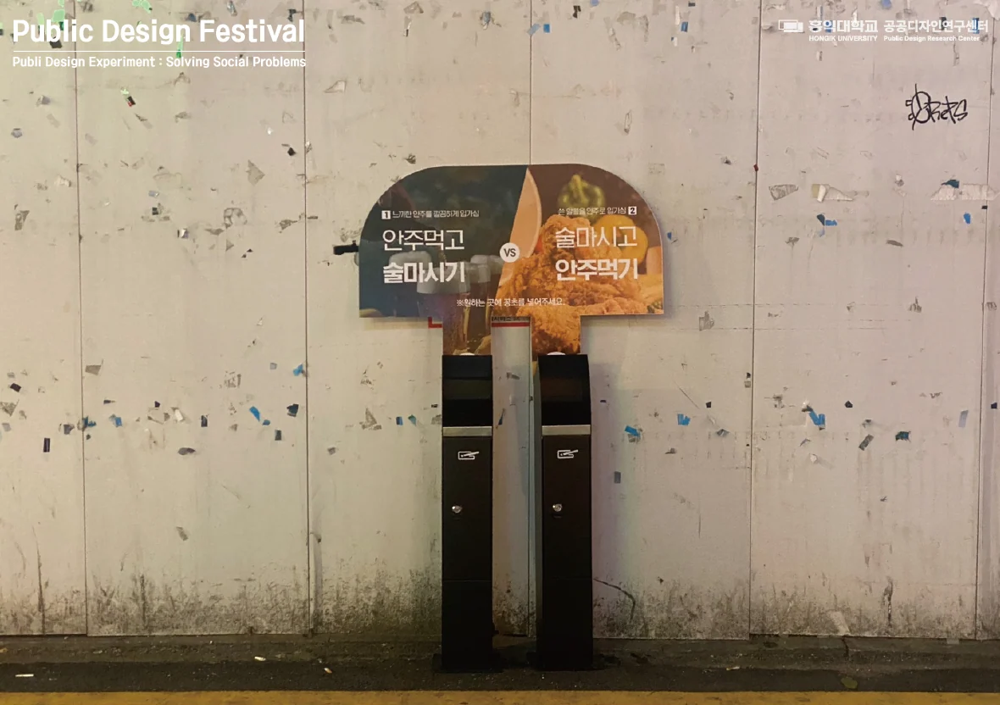
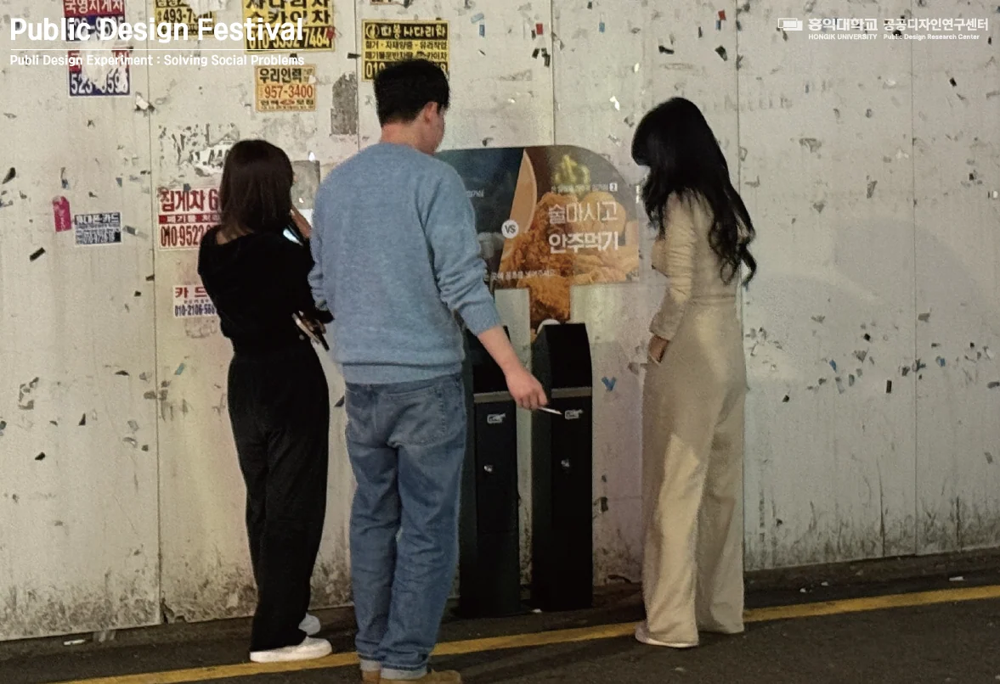
실험 결과, 많은 흡연자들이 디자인에 흥미를 보였으나, 여전히 바닥에 꽁초를 버리는 행태가 관찰되기도 했다. 하지만 이 실험은 흡연자들의 행태(벽이나 바닥, 혹은 핸드폰을 보며 흡연하는 습관 등)에 대한 새로운 분석 데이터를 제공했으며, 향후 바닥 투여형 흡연실, 스몸비(스마트폰+좀비)를 위한 흡연 공간 등 더욱 효과적인 흡연구역 디자인 개발의 가능성을 제시했다는 점에서 의미가 있다. 사용자 행태 패턴 속에서 문제 해결의 실마리를 찾아가는 공공디자인 실험의 중요성을 보여준 사례다.
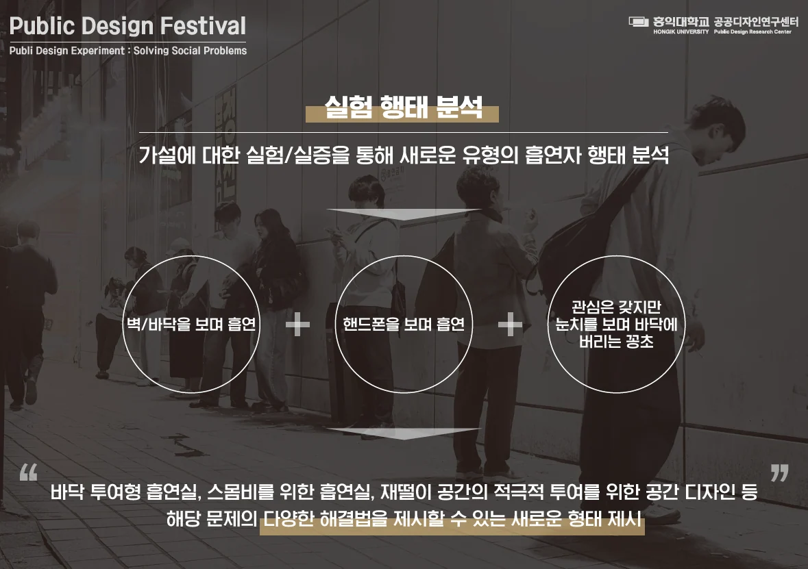
2. 페인트는 안전장치가 아니다 _ 레드컵 프로젝트
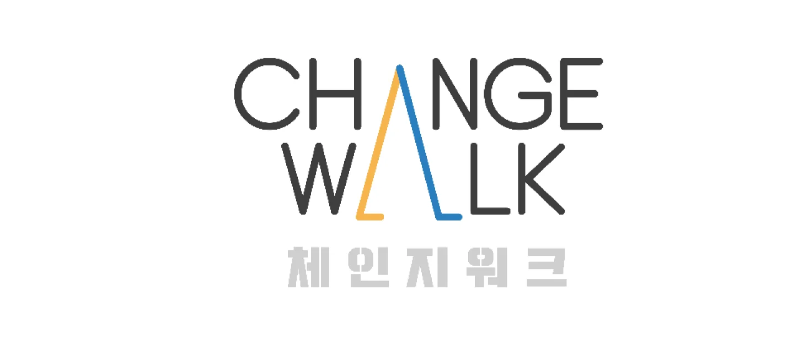
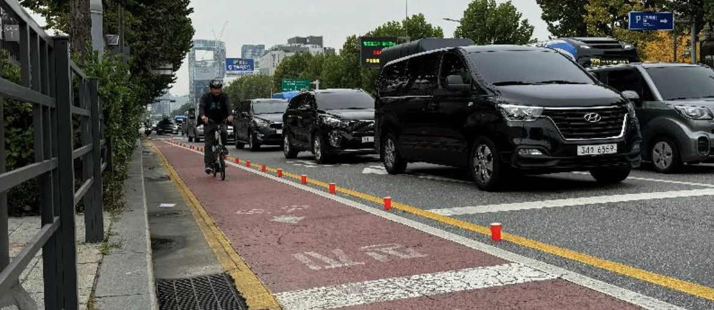
체인지 워크는 자전거 이용자의 안전 문제, 그중에서도 페인트로만 구분된 자전거 도로의 한계를 지적하며 실질적인 안전 확보 방안을 모색했다. 페인트 선만으로는 차량과 자전거 이용자 간의 물리적 분리가 이루어지지 않아 사고 위험이 높으며, 특히 '도어링(Dooring)' 사고(차량 문 열림 사고)에 취약한 문제를 해결하고자 하였다, 이 공공디자인 실험은 종묘공영주차장 건너편 따릉이 대여소 주변에서 혜화경찰서 집회신고를 통해 경찰의 안전관리 하에 진행되었다.
“ 물리적 분리대가 없는 자전거도로의 문제 공유”
-미국 등에서 수행된 ‘Red Cup Project’를 벤치마킹
-페인트로만 조성된 자전거도로를 따라 빨간 컵을 배치
-자전거도로를 침범한 자동차들의 인식개선
체인지 워크는 다양한 연구 결과와 데이터를 인용하며, 물리적 보호 시설이 있는 보호 자전거 도로가 자전거 이용자가 인지하는 안전성을 크게 향상시킨다는 점을 제시했다. 단순히 페인트로 선을 긋는 방식에서 벗어나, 연석, 분리대, 주차된 차량 등을 활용하여 차도와 자전거 도로를 명확히 분리하는 것이 중요함을 역설했다.
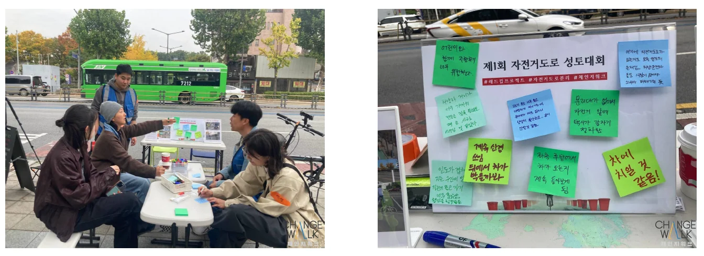
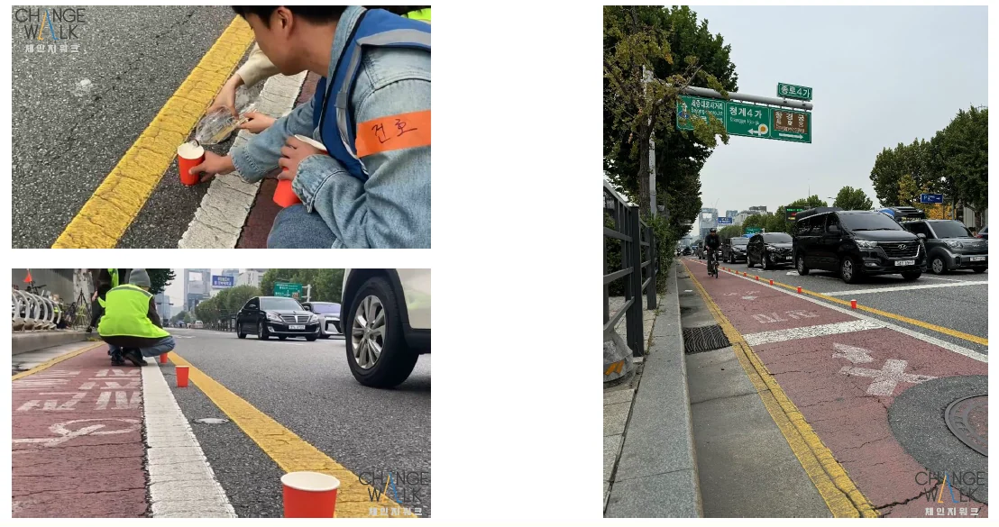
레드컵 관찰기:
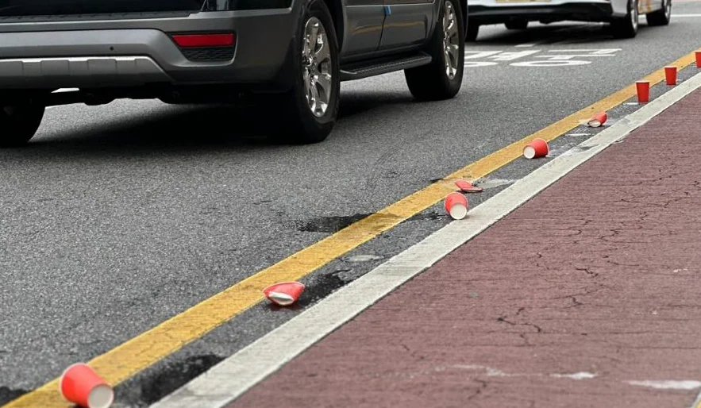
종이컵이 자동차에 의해 뭉개지는 장면이 나오기는 했지만 전반적으로는 종이컵이 줄지어있으니 언제그랬냐는 듯 침범차량이 없어짐
→ 일반적인 일회용컵과 다르게 생겨서 부딪히면 안되는 지장물로 인식하였을까?
→ OR 종이컵처럼 자그마한 분리대만으로도 효과적일 것이다.
본 공공디자인 실험에서는 데이터와 연구에 기반하여 기존 도로 설계의 문제점을 분석하고, 물리적 안전장치의 필요성을 강조함으로써 보다 안전한 교통 환경 조성을 위한 공공디자인의 역할을 명확히 했다는 점에서 중요한 의미를 지닌다. 페인트가 시각적 안내는 될 수 있어도, 그 자체로 안전을 담보하는 장치가 될 수는 없다는 메시지를 던졌거 레드컵 실험을 통해 운전자의 안전을 유도할 수 있는 다양한 단서를 발굴하였다.
3. 모든 어린이가 안전해지는 날까지, 도리도리!
“어린이를 위한 안전 디자인의 다각적 모색”
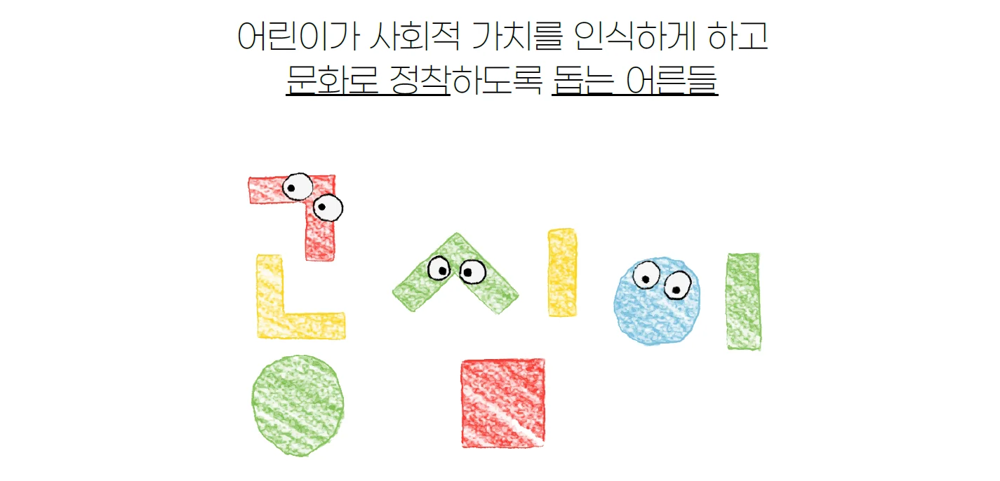
'도리도리!' 프로젝트는 NPO ‘공심이(공공디자인에 진심인 이들)’에 의한 공공디자인 실험으로 어린이 안전이라는 목표 아래, 다양한 디자인적 개입을 시도하고 그 효과를 검증하는 과정을 보여준다. 이 프로젝트는 문제 정의(Introduction), 경험(Experience), 좋은 모델 탐색(Good Model), 극복(Overcome), 움직임(Movement)의 단계로 구성되어 어린이 안전 문제에 체계적으로 접근했다.
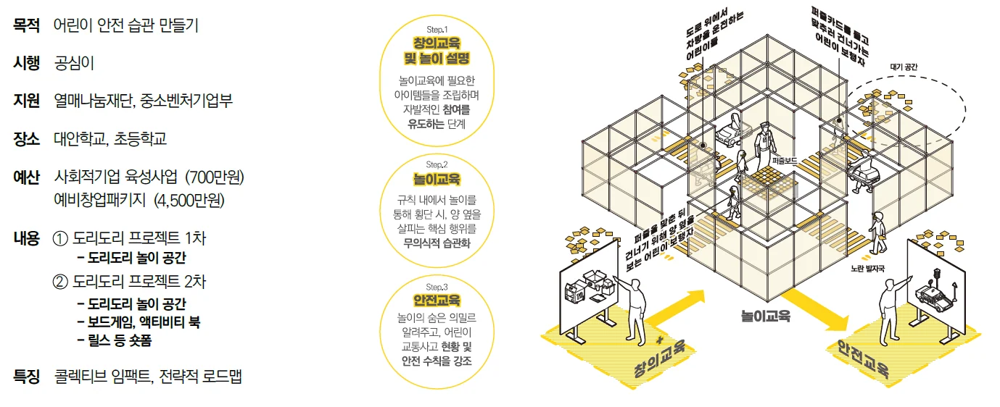
특히 '극복(Overcome)' 단계에서는 어린이 교통사고 다발 지역 분석, 통학로 안전 문제, 놀이 공간 부족 등 구체적인 문제 상황들을 제시하고, 이에 대한 디자인 해결책 아이디어를 모색했다. 예를 들어, '페인트는 안전장치가 아니다'에서 강조된 보호 자전거 도로 설치 외에도, 횡단보도 안전 개선, 어린이 보호구역 시인성 강화, 안전한 놀이 공간 조성 등 다각적인 접근이 필요함을 찾아내었다.
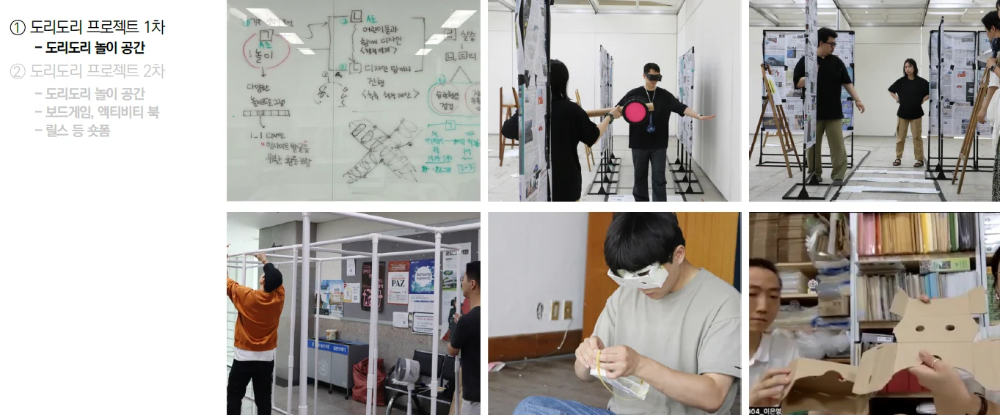
“ 안전한 보행환경을 조성하기 위한 프로그램 ”
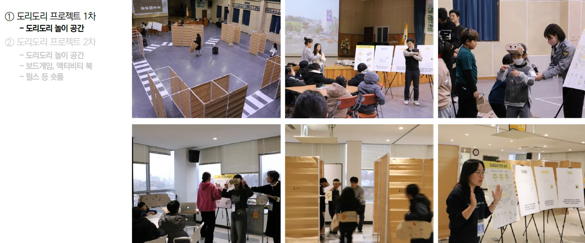
-학생들의 도로에서 안전한 보행환경을 만들어주기 위한 교육
-스쿨존을 인식할 수 있는 다양한 임시시설물 조성
-임시적 프로그램을 통한 안전한 통학환경 조성
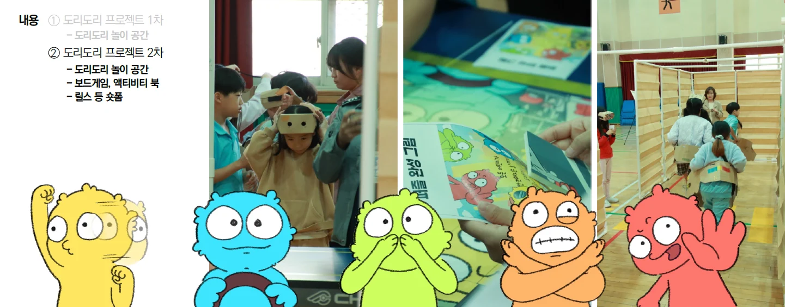
'도리도리!'는 단순히 시설 개선에 그치지 않고, 어린이의 행동 특성과 인지 능력을 고려한 디자인, 안전 교육과의 연계, 지역사회와의 협력 등 통합적인 관점에서 어린이 안전 문제를 바라봐야 함을 강조한다. 모든 어린이가 안심하고 뛰어놀 수 있는 환경을 만들기 위한 공공디자인의 책임과 가능성을 보여주었다는 점에서 그 가치가 크다.
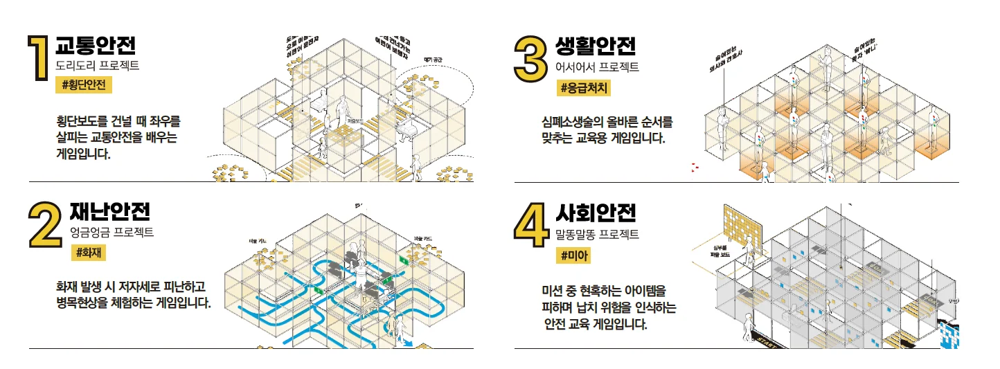
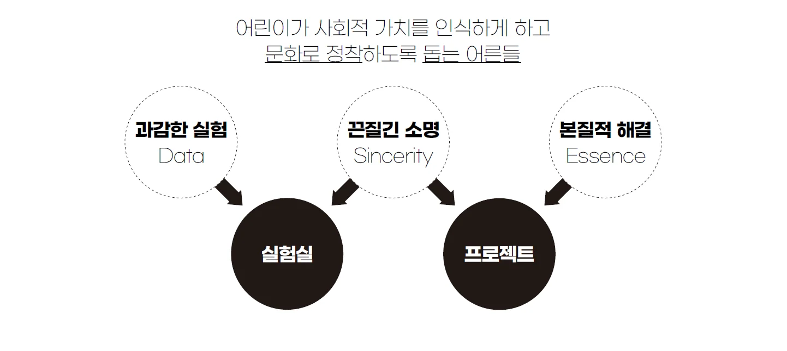
4. 머물고 싶은 거리 만들기 '함께하길 머무르길’
‘청년 주도의 로컬 디자인 실천’
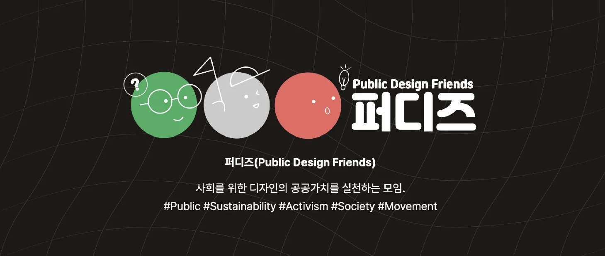
'퍼디즈(Public Design Friends)'가 주도한 '함께하길 머무르길' 프로젝트는 청년들이 직접 사회 문제 해결의 주체로 나서 지역(로컬)을 위한 디자인 실험을 추진하는 과정을 담고 있다. 퍼디즈는 '공공디자인 청년 거버넌스'의 액티비즘 그룹으로, 다음 세대의 주인공인 청년들이 사회 문제 해결을 목표로 디자인 활동을 전개하는 모임이다.
이들은 '로컬을 위한 디자인 실험'이라는 큰 주제 아래, 디자인 워크숍을 통해 지역의 문제를 정의하고 아이디어를 도출하며 실제적인 행동 계획을 수립하는 과정을 거쳤다. 경의선 숲길 등 실제 공공공간을 대상으로 활동하며, 지역 주민들이 '머물고 싶은' 매력적인 거리를 만들기 위한 디자인 아이디어를 구체화하고 실현하고자 노력했다.
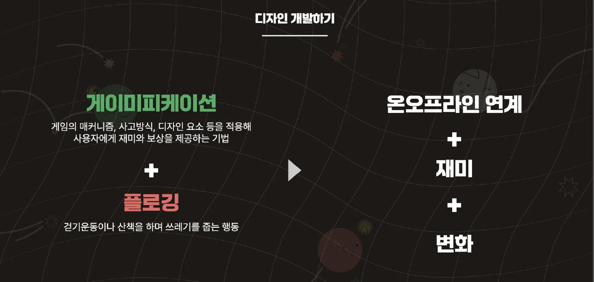
“ 경의선 숲길 쉬는공간에 버려지는 쓰레기로 인한 환경오염 개선”
“ 내가 사용한 자리를 깨끗하게 만드는 참여형 인식개선”
-경의선 숲길을 이용하는 사람들이 직접 참여하는 행사 마련
-올바른 쓰레기 분리수거를 유도하는 게이미피케이션 도입
-다양한 참여자들의 유도로 쓰레기 투기에 대한 인식개선
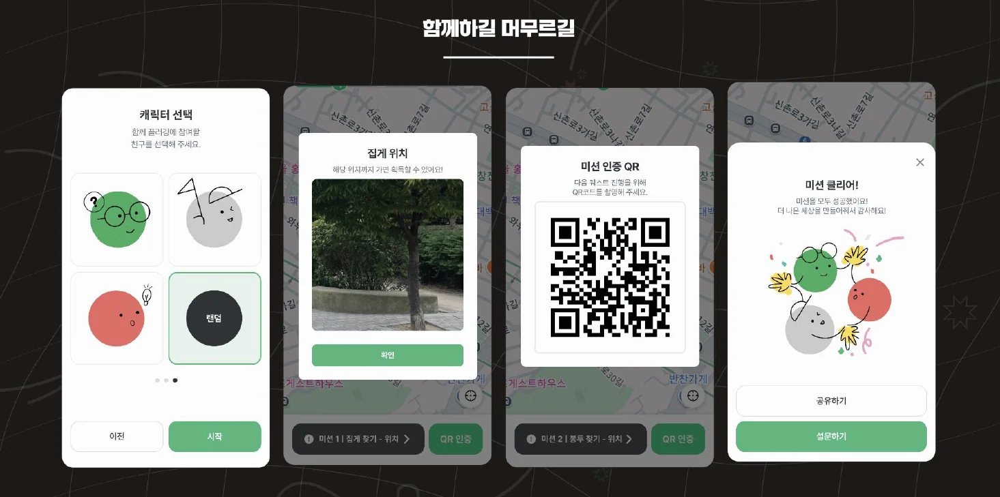
이 프로젝트는 청년들이 공공디자인 분야에서 주도적인 역할을 수행하며 신선한 아이디어와 실행력으로 지역 사회에 긍정적인 변화를 가져올 수 있음을 보여준다. 또한, 기성세대와의 교류 및 협력을 통해 지속가능한 공공디자인 생태계를 구축하고, 나아가 공공디자인의 대중화에도 기여할 수 있다는 잠재력을 제시한다. 청년들의 참여와 연대를 통해 만들어가는 미래지향적인 공공디자인의 가능성을 엿볼 수 있는 의미있는 시도였다.
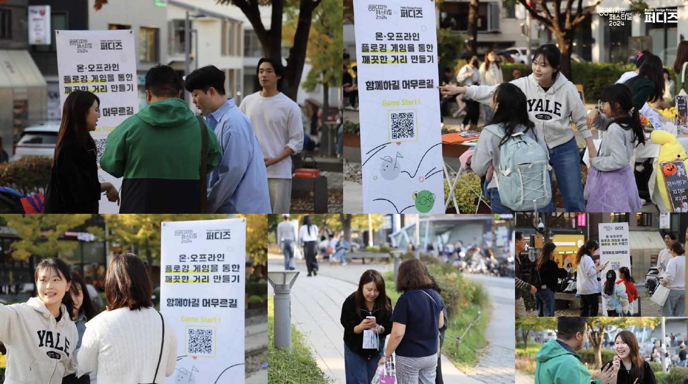
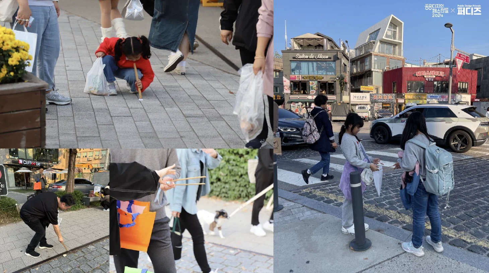
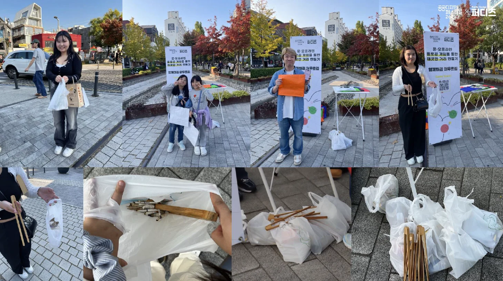
5. 도시 속 쓰는 사람, 쓰이는 공간
‘비어있는 공간의 재발견과 활용’
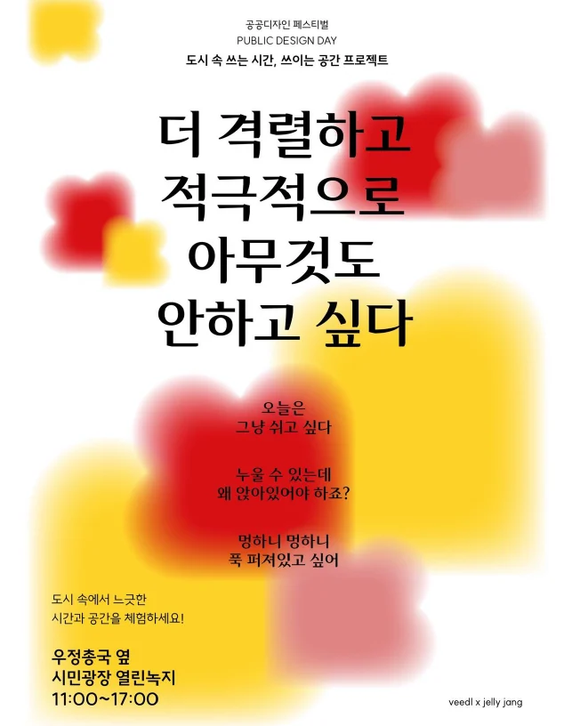
'비들 x 젤리장'의 도시 속 쓰는 사람, 쓰이는 공간 프로젝트는 도시 속 활용되지 않거나 버려진 공간들에 주목하여 이를 '쓰는 사람(시민)'을 위한 '쓰이는 공간'으로 탈바꿈시키려는 시도를 보여준다. 이 프로젝트를 통해 공공공간에 대한 창의적인 개입을 통해 공간의 의미를 재해석하고 새로운 가치를 부여하고자 했다.
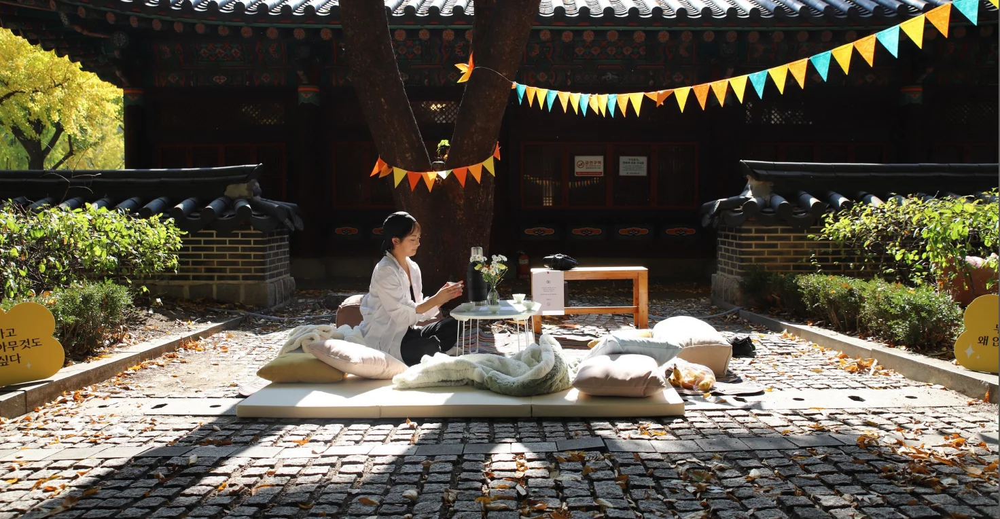
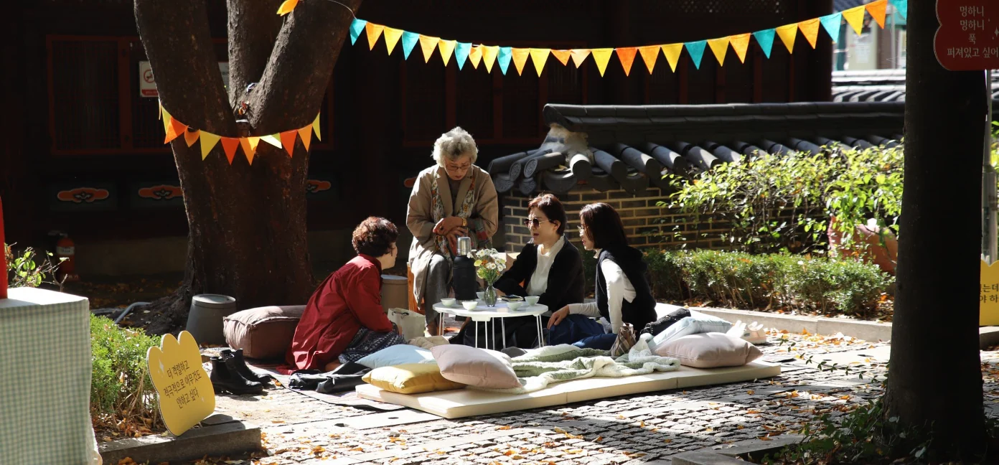
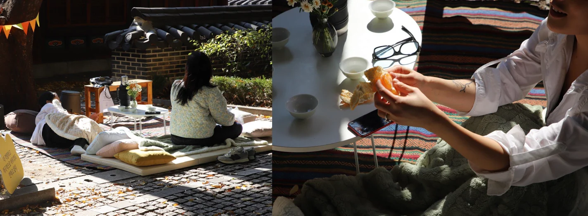
“ 간단한 공간 개선을 통한 도심 속 쉼의 공간 만들기”
-흥미와 사용을 유도하는 시설 설치
-누구나 사용 가능한 열린 공간으로 공개공지 홍보
-시설에 대한 시민들의 반응 관찰 및 기록
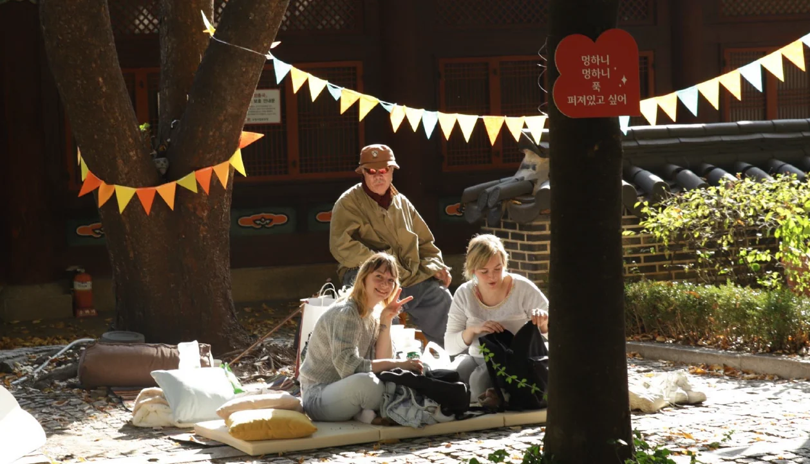
“도시 속 쓰는 사람, 쓰이는 공간”의 실험과 실증내용
❶계기를 마련하면 쓰일까 공간과 시간이.
> 대상지에서 벌어지는 다채로운 동선(행동)을 확인하기
❷어떻게 그리고 얼마나 쓰일까 공간과 시간이.
>공간을 쓰는 방식과 시간을 정량적으로 추적하기
❸실험 공간에서 엮인 관계와 경험을.다시 한 번 상기시킬 수 없을까?
> ‘쉼’의 경험을 현장에서 집으로 발송하기
우정총국 옆 시민광장 열린녹지에 시민들이 자유롭게 메시지를 쓰거나 그림을 그릴 수 있도록 지원하는 시설물과 돗자리가 깔린 휴식공간과 미니 가구를 배치하여 사람들이 잠시 쉬어가거나 소통할 수 있는 커뮤니티 공간을 조성하고 이 과정에서 시민들의 참여를 기록하고 분석하여(예: 타임랩스 기록), 공간 활용 패턴과 시민들의 요구를찾아내어 도심 속 공공공간의 의미에 대한 다양한 근거를 찾아보았다.
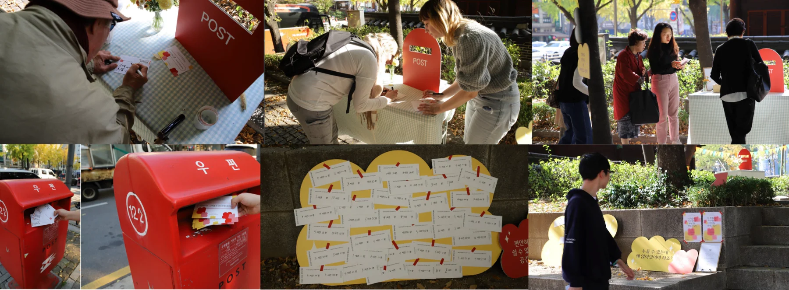
이 프로젝트는 도시의 유휴 공간이 가진 잠재력에 주목하고, 시민 주도의 창의적인 활용을 통해 공간에 활력을 불어넣을 수 있음을 보여준다. 딱딱하고 기능 위주였던 도시 공간을 시민들의 표현과 소통이 이루어지는 장으로 변화시킴으로써, 도시 공간의 민주성과 포용성을 높이는 데 기여한다는 점에서 그 가치와 의미를 찾을 수 있다.
공공디자인으로 랩(Lab)하기의 가치
Public Design Day는 디자인의 전문적 영역을 넘어, 시민들의 삶과 직결된 구체적인 사회 문제를 해결하는 실용적인 도구일 수 있음을 입증하려는 중요한 시도였다. 비록 임시적인 디자인 개입이었지만, 그 과정에서 축적된 경험과 데이터, 그리고 확산된 공감대는 다양한 주체들의 협력과 참여 기반으로 실제적인 변화의 가능성을 보여주었다.
공공디자인의 임시적이고 실험적 방법론을 제시하고, 보다 지속 가능하며 사람 중심적인 도시 환경을 만들어나가는데 역할이 가능함을 보여주었다. 이 행사는 디자인이 단순한 심미적 활동이 아닌, 더 나은 사회를 만들기 위한 적극적인 실천이자 문제 해결 과정임을 느낄 수 있게 하였다.
■실행 중심의 실용성
이론이나 제안에 머무르지 않고 실제 현장에서 디자인 솔루션을 적용하고 실험함으로써 공공디자인의 실천적 가치를 강조했다.
■혁신적 방법론 도입
기존 제도가 아닌 임시적인 실험방식을 적극 활용하여 변화에 대한 저항을 줄이고, 저비용으로 빠른 효과 검증 및 시민 참여를 가능하게 했다.
■다자간 협력 모델
학계(홍익대), 시민 그룹(퍼디즈, 공심이, 체인지워크, 비들x젤리장), 지원 기관(KCDF), 그리고 지자체 및 민간 기업까지 연계하는 협력적 거버넌스 구축의 가능성을 보여주었다.
■평가 및 환류 시스템
임시 개입의 효과를 관찰하고 기록하며, After Party를 통해 결과를 공유하고 논의하는 등, 단기적 성과를 장기적 개선으로 연결하려는 평가 및 환류 체계를 보여주었다.
■시민 인식 제고 및 참여 확대
시민들이 일상 공간의 문제 해결 과정에 직접 참여하고 변화를 경험하게 함으로써, 공공 문제에 대한 관심을 높이고 주체적인 참여를 유도하는 교육적 효과가 있었다.